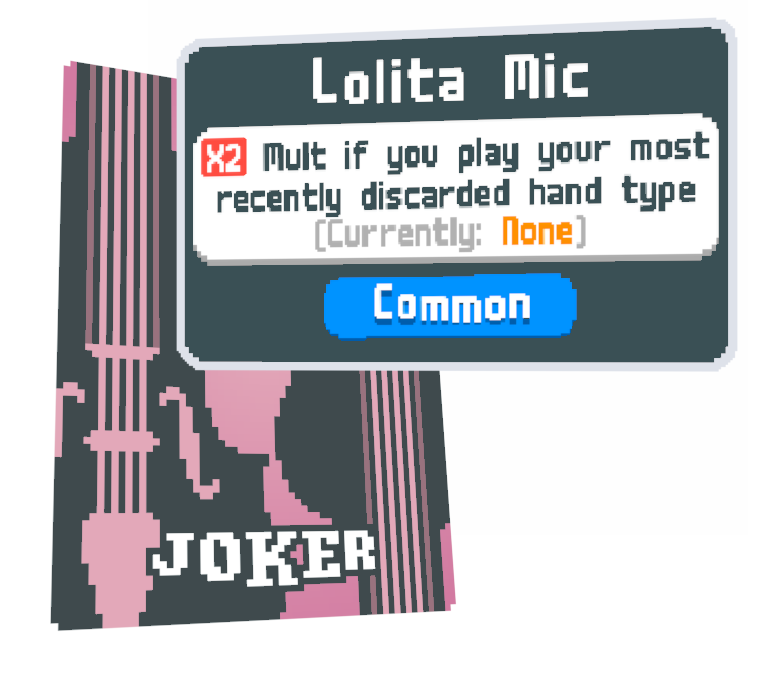
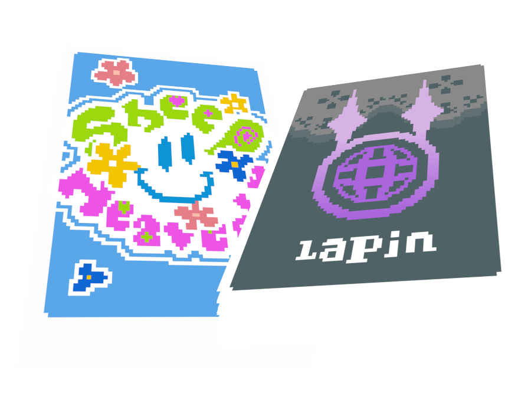

Mod Features

75 Vanilla+ Jokers
While this mod's aesthetics are directly inspired by The World Ends With You, the effects of these jokers are designed to fit in with those of Balatro's itself. Each joker attempts to take a concept from the base game and get you to think about it in new ways, encouraging novel and interesting scoring patterns.
Themed Joker Brands
All of The World Ends With You's 12 main brands have been adapted into a themed line of jokers, each focusing on a specific game mechanic. From chips to hand size to retriggers, there's a brand of jokers for everything you could want.

6 New Decks
In addition to jokers, each brand also has a signature deck, adapting that brand's featured mechanic into a run-defining ability. Some offer small benefits, while others completely overhaul how you approach playing the game
Gatito Packs [WIP]
The special 13th brand of TWEWY, these unique jokers only activate when you hold every joker from their set at once. You can only find them in Gatito Packs - extremely rare at first, but once you start work on a Gatito set, one will appear every shop until you assemble the complete set.
[Not currently implemented, check back next update!]
Download Link
download
(Requires Steamodded 1.0)
Decks
Jokers
consumables
card modifications
stickers
blinds
shop items
Website source by nonmario
https://github.com/notmario/balatrowebsitetemplate